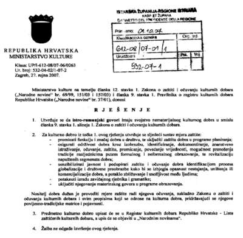

Istrorumunjski govori proglašeni zaštićenim nematerijalnim kulturnim dobrom
U obrazloženju Ministarstva kulture istrorumunjski su govori jedno od najugroženijih kulturnih dobara na istarskome tlu • Stotinjak istrorumunjskih govornika živi u Žejanama, a devedesetak u kršanskim selima. Najviše ih ima u Novoj Vasi, Šušnjevici i Jesenoviku, u manjem broju ima ih još u naseljima Letaj, Brdo, Kostrčani, Zankovci, Miheli, Dražina, Draga i Jelavići
Pazin - Rješenjem hrvatskog Ministarstva kulture od 27. rujna ove godine istrorumunjski govori proglašeni su nematerijalnim kulturnim dobrom i upisat će se u Listu zaštićenih kulturnih dobara Republike Hrvatske.

U Hrvatskoj su se inače nematerijalna kulturna dobra počela evidentirati i zaštićivati tek odnedavno, a dosad ih je rješenjima Ministarstva zaštićeno sedamnaest. Istrorumunjski govori nisu prvo istarsko zaštićeno nematerijalno kulturno dobro: "paketom" rješenja od 12. srpnja ove godine zaštićeni su "Glazbena praksa violine i bajsa," "Rovinjska bitinada," "Dvoglasje tijesnih intervala Istre i Hrvatskog primorja" (s četiri potkategorije: kanat i svirka na tanko i debelo, taranjkanje odnosno tararanjkanje, bugarenje, te diskantno dvoglasje Galižane i Vodnjana) te "Zvončari – godišnji pokladni ophod na Kastavštini". Svi će oni 16. listopada biti predstavljeni u Puli.
Za postupak kandidiranja i elaboriranja zaštite nematerijalnih kulturnih dobara zaduženo je Povjerenstvo za nematerijalnu kulturnu baštinu Ministarstva kulture, čiji je inače član i Lidija Nikočević, ravnateljica pazinskog Etnografskog muzeja Istre. Ovaj "val" registracije i zaštite dijelova istarskog tradicijskog nasljeđa krenuo je uslijed nemogućnosti da se kao cjelovit i kompleksan glazbeni sustav, čak i u međunarodnim razmjerima, zaštite u prvom pokušaju istarska ljestvica, a u drugom "istarski glazbeni mikrokozmos". Međunarodna zaštita nije uspjela jer preduvjet mora biti najprije zaštita na nacionalnoj razini, a kako se spomenuti "mikrokozmos" sastoji od niza bitno različitih sustava, zaključilo se kako će učinkovitije biti krenuti sa zaštitom jednog po jednog. Uz glazbenu, na red su za zaštitu došli i drugi oblici baštine, a istrorumunjski su govori jedno od najugroženijih kulturnih dobara na istarskome tlu, što je istaknuto i u obrazloženju rješenja Ministarstva kulture.
Danas postoje dva tipa istrorumunjskog govora, sjeverni u Žejanama i južni u nekoliko sela općine Kršan, sa svega 250 živih govornika, računajući i iseljenike u veće gradove. Stotinjak istrorumunjskih govornika živi u Žejanama, a devedesetak u kršanskim selima. Najviše ih ima u Novoj Vasi, Šušnjevici i Jesenoviku, u manjem broju ima ih još u naseljima Letaj, Brdo, Kostrčani, Zankovci, Miheli, Dražina, Draga i Jelavići, a prema sjećanjima danas živućih govornika, istrorumunjski se govorio još i u zaselcima Trkovci, Dolinšćina, Perasi, Grobnik i Gradinje.
Proglašenjem istrorumunjskih govora zaštićenim nematerijalnim kulturnim dobrom Ministarstvo je utvrdilo i sustav mjera zaštite kojim se "nositelji dobra" obvezuju promicati funkciju i značaj tog dobra u društvu, uključiti ga u programe planiranja, osigurati njegovu održivost kroz izobrazbu, identificiranje, dokumentiranje, znanstveno istraživanje, očuvanje, zaštitu, promicanje, povećanje vrijednosti, prenošenje tradicije nasljednicima putem formalnog i neformalnog obrazovanja, revitaliziranje napuštenih segmenata dobra, senzibiliziranje javnosti i podupiranje zaštite dobra kako bi se izbjegla opasnost njegova nestajanja, uništenja ili komercijalizacije. Jedna od obaveza je i izrada zavičajnog rječnika i gramatike te uključivanje istrorumunjskih govora kao materinjeg jezika u programe obrazovanja.
U rješenju Ministarstva nije baš jasno istaknuto tko je "nositelj dobra," no vjerojatno su to institucije na koje je i adresiran ovaj dokument: Grad Rijeka, Općina Kršan, Primorsko-goranska i Istarska županija, Institut za hrvatski jezik i jezikoslovlje u Zagrebu, Konzervatorski odjel u Rijeci i Puli te Uprava za zaštitu kulturne baštine.
Dr. Filipi: Pozdravljam takvu odluku
Za komentar o uvrštavanju istrorumunjskog govora na listu kulturnih dobara Republike Hrvatske pitali smo dr. Gorana Filipija, pročelnika Odjela za humanističke znanosti Sveučilišta Jurja Dobrile u Puli i uvaženog stručnjaka za istrorumunjski.
- Pozdravljam takvu odluku i nadam se da će potaknuti buduća istraživanja, pa i senzibilizirati odgovorne strukture za financijsku podršku takvim projektima, veli dr. Filipi. (N. H.)
D. Šišović
October 6, 2007
© 2007 Glas Istre